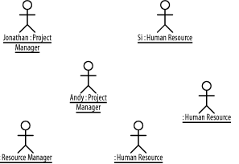
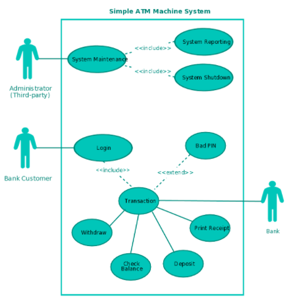
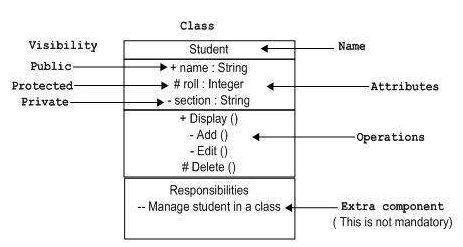
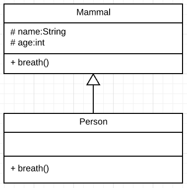
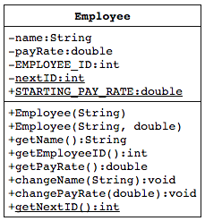
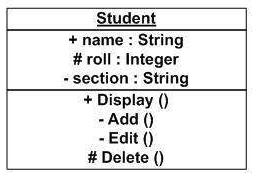
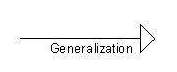
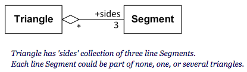
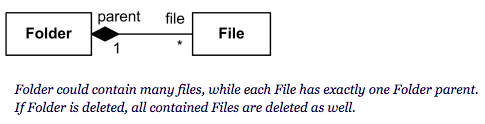

Use Case Diagrams
Use case diagrams are used to gather the requirements of a system including internal and external influences are modelled to present the outside view. They consider the actors involved with a system and what functions each should be able to perform or have access to.
The main purposes of use case diagrams are...
- Used to gather the requirements of a system.
- Used to get an outside view of a system.
- Identify the external and internal factors influencing the system.
- Show the interaction among the requirements are actors.

The previous image shows the standard design of a use case actor.

(Sources:
Creately: The Complete Guide to UML Diagram Types with Examples
Tutorials Point: UML - Use Case Diagrams
)
Updated: 28/06/2017
Class Diagrams
Class diagrams are structure diagrams which show the structure of the systems design at the level of classes. They also define the relationships and associations between them.
Class diagrams are a way of designing and analysis the static view of an application, describing the responsibilities of a system and
These diagrams are commonly made up of three sections, the name, attributes and methods.
The basic notation of a class diagram

An example of the generalisation arrow used to depict inheritance.
In the example the attributes of Mammal, name and age, and the method
breath are inherited by Person. These are omitted from the Person class
diagram. If breath was overridden in the Person class it would then be
included.

Underlining identifies static members.
(Sources:
uml-diagrams.org: UML Class and Object Diagrams Overview
Tutorials Point: UML - Class Diagram
Stack Overflow: Show inherited methods etc in Visual Paradigm
)
Updated: 28/06/2017
UML Notation
UML notations are the most important elements in modelling. Appropriate use of notations is very important for making a meaningful model. The model is useless, unless its purpose is depicted properly.
Class Notation
Object Notation
The notation for object diagrams is similar to class diagrams only the name is underlined.
Generalisation Arrow
Used to show the relationship between a generalised element (interface, abstract class, superclass ect.) and a specialised element (a class that inherits, implements, includes ect.).
Shared Aggregation / Aggregation
Aggregation is a binary association involving two parts, one of which holds multiple instances of the other (for example in a collection). It is a one way relation and can never by cyclical.
This is similar to composite aggregation only when the class holding the collection is destroyed the individual instances of the other classes are not destroyed.
The relationship is depicted with a line between two classes. Where the line connects to the class containing the collection a blank diamond is drawn.
Composite Aggregation / Composition
Composition is also a binary association involving two parts, one of which holds multiple instances of the other (for example in a collection). It is a one way relation and can never by cyclical.
This is similar to shared aggregation only when the class holding the collection is destroyed the individual instances of the other classes are also destroyed.
The relationship is depicted with a line between two classes. Where the line connects to the class containing the collection a filled diamond is drawn.
Aggregation vs Composition
The main difference between aggregation and composition is that in aggregation the singular class can exist independently but in composition the singular class cannot exist without the class holding the collections. Using the previous examples the segments may be part of any triangle and will not be removed when a single triangle is destroyed. On the other hand the When the folder is destroyed the files that are apart of it will also be destroyed.
The following rules may not always apply but are useful...
- IF created inside the constructor and destroyed - Composition
- IF created inside the constructor but not destroyed - Aggregation
(Sources:
Tutorials Point: UML - Basic Notations
Microsoft developer network: UML Class Diagrams - Reference
uml-diagrams.org: UML Aggregation
University of the west of England: Composite Vs Shared
)
Updated: 29/06/2017
Diagrams
In UML there are 14 key diagrams to know. These are split into two categories, which are structural and behavioural diagrams.
Structural Diagrams
The aim of structure diagrams is to show the static structure of a system and how different parts relate to one another.
- Class
- Component
- Deployment
- Object
- Package
- Profile
- Composite
Behavioural Diagrams
The aim of behavioural diagrams is to show the dynamic nature of the system and represent the changing parts.
- Use Case
- Activity
- State Machine
- Sequence
- Communication
- Interaction Overview
- Timing
(Sources:
uml-diagrams.org: UML 2.5 Diagrams Overview
Tutorials Point: UML - Standard Diagrams
)
Updated: 27/06/17
What is UML
UML stands for 'Universal Modelling Language' and was designed as a pictorial language which is used to define and document systems that use OOP. UML was developed as a communication tool to assist teams in understanding the structure of software systems.
UML:
- A way of visually showing the overall architecture of the system
- A way of showing the same system from different points of view (abstraction)
- A standard graphical set of shapes representing generic objects within a system
- A standard way of documenting the attributes (data) of each object
- A way of defining functions / methods that can change the state of each object
- A way of showing how the objects interact with one another
- Making it possible to generate code directly from an UML diagram
- Making it possible to allow vendors to produce toolsets for developers
UML diagrams are not only made for developers but also for business users, and anybody interested to understand the system. The system can be a software or non-software system. Thus it must be clear that UML is not a development method rather it accompanies with processes to make it a successful system.
(Sources:
Teach ICT: UML
Tutorialspoint: UML
)
Updated: 25/06/2017